含有关键字“石冢裙带菜”的文章
1-
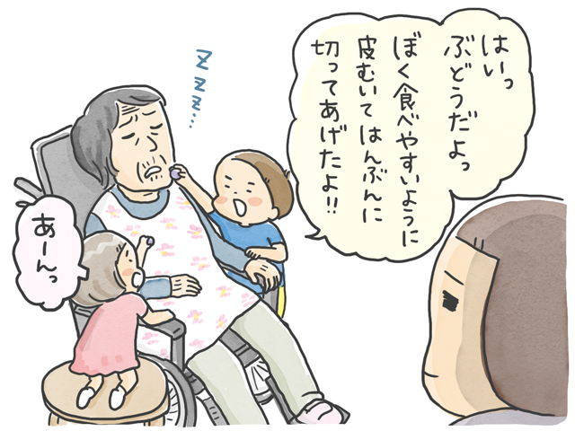
每个人的经历 发布日期：“这就是我现在要做的！”关于近距离护理/石冢，我想对过去的自己说的话……
-
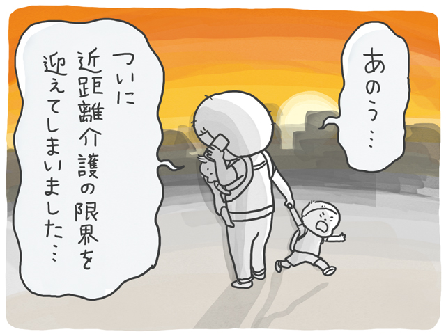
每个人的经历 发布日期：近距离护理的极限终于达到了……在公交车上度过了平静的最后一晚……
-
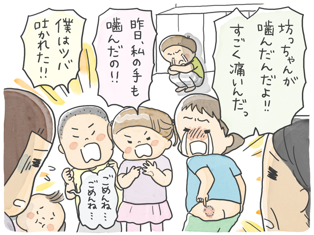
每个人的经历 发布日期：他在幼儿园咬了他的朋友！？持续强制看护的压力落在了他的儿子身上……/石冢……
-
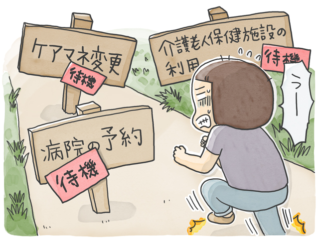
每个人的经历 发布日期：“如果我能忍住就好了……”我充满了焦虑，用设施主任的话哭了……
-
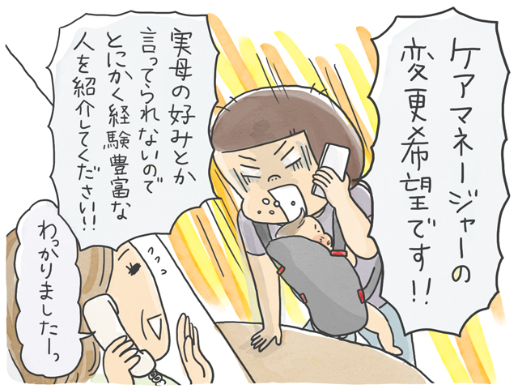
每个人的经历 发布日期：由于发生了很多麻烦，我们的容量已经超出了！我们现在需要什么....../石冢裙带菜
-
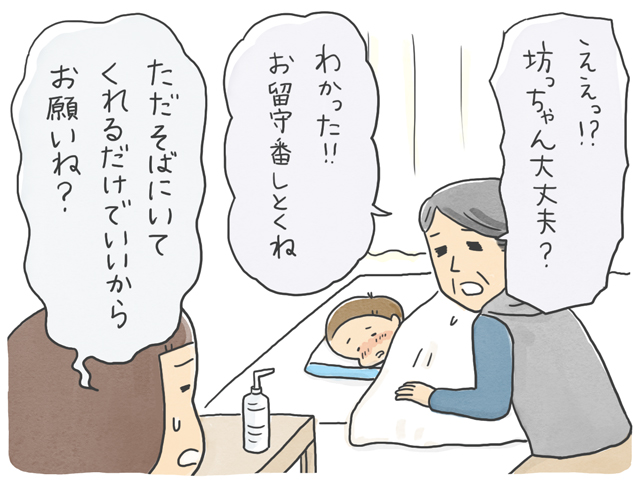
每个人的经历 发布日期：我让妈妈在家里陪着高烧卧床的儿子一段时间。当我回来时……／……
-
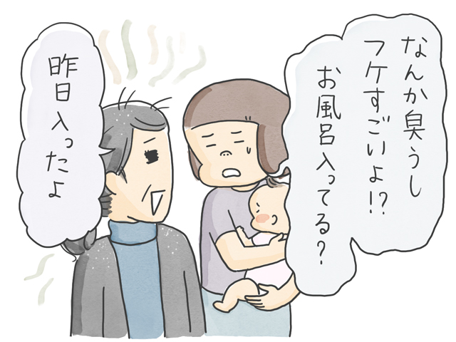
每个人的经历 发布日期：“我准时洗澡”每天不洗澡的问题/石冢裙带菜
-
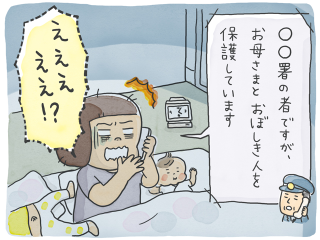
每个人的经历 发布日期：妈妈去了很远的一家商店。我没有付款就打开了产品.../...
-
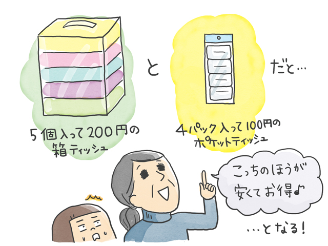
每个人的经历 发布日期：什么！？我的母亲患有痴呆症，已经不再做她最喜欢的事情“购物”。它如此神奇的原因是……
-
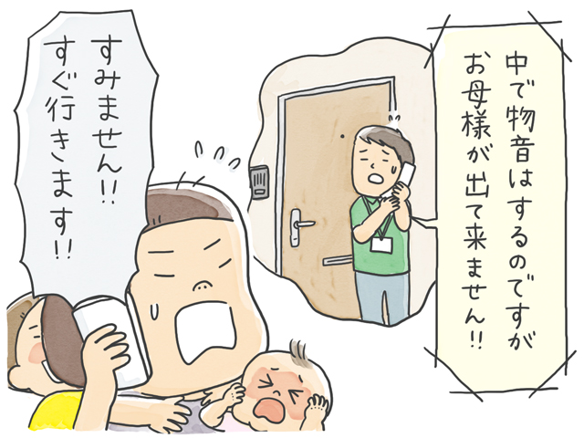
每个人的经历 发布日期：当我独自一人在公寓里时我应该做什么？近距离护理的困境/石冢华...
-
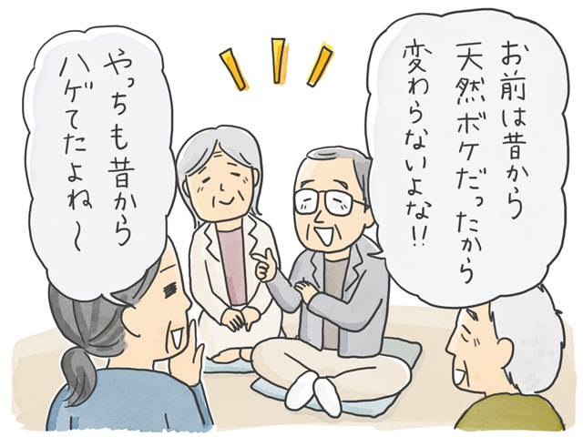
每个人的经历 发布日期：与老朋友重逢...即使名字没有出现，我的青春记忆也溢出/石冢和香...